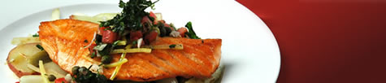

Menu
Appetizers

- Roasted Tomato Soup - served with goat cheese croutons and basil puree.
- Summer Salad - organic butter lettuce with apples, blood oranges, and gorgonzola, tossed with raspberry vinaigrette.
- Fondue of Brie, Goat Cheese, and Gruyere - served with green apples and garlic crostini. Good for sharing.
- Crispy Flatbread - topped with asiago, prosciutto, and rocket.
- Yellow-fin Ahi Tatar - served on a bed of shredded cabbage
with avocado relish and a green peppercorn dressing.
Entrees

- Pancetta-wrapped Sea Scallops - drizzled with tarragon puree. Served with baked cauliflower au gratin in a tangy Gruyere sauce.
- Cajun Seafood Bouillabaisse - with crawfish, scallops, catfish, crab, and mussels. Served with Southern-style cornbread and honey butter.
- Cavatappi Pasta with Spicy Chickpea Sauce - tossed with grilled eggplant, green olives, and sun dried tomatoes. Topped with Mediterranean feta.
- Sage-rubbed Double-cut Pork Chop - topped with a ragout of mushrooms and chunky pancetta. Served with griddle corn cakes.
- Lasagna Bolognese - house-made pasta between layers of
slow-cooked pork and beef Bolognese sauce. Served with
organic asparagus.
- Sake-soaked Kobe Beef Tartar - served with fontina-stuffed squash blossom tempura with cream wasabi sauce.
Desserts

- Tiramissu - cool, refreshing Italian dessert.
- Baked Pears with Caramel Sauce - topped with house-made vanilla-bean ice cream.
- Pumpkin Creme Brulee - served with our famous ginger snap cookies.
- New York Cheesecake - creamy traditional cheesecake topped with dark chocolate sauce and fresh-picked strawberries.
- Sacher Torte - three layers of dark chocolate cake, filled with house-made apricot jam, covered in a creamy, rich chocolate glaze.
Friday catch of the day

- Alaskan Halibut with a Rich Loire Valley Beurre Blanc Sauce - served with mashed purple Peruvian potatoes and haricot verts.
- Recommended pairing: '98 Passi Emilio Vineyards Sauvignon Blanc